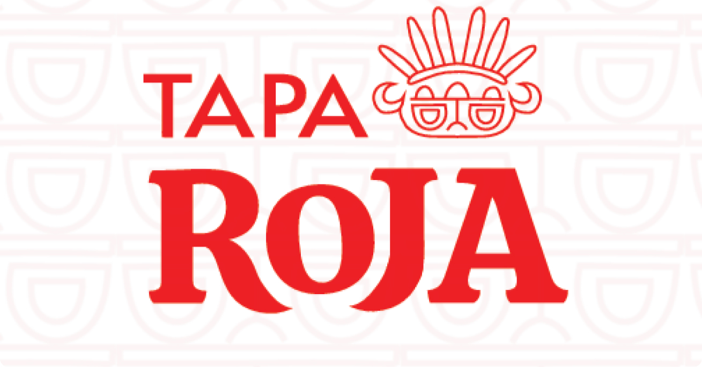

ACERCA DE
Proyecto universitario que consistía en rediseñar la marca de aguardiente “Tapa Roja” añadiendo un personaje a su marca. Todo el concepto se basa desde la cultura Precolombia caracteristica del lugar de origen de Tapa Roja, el Tolima.